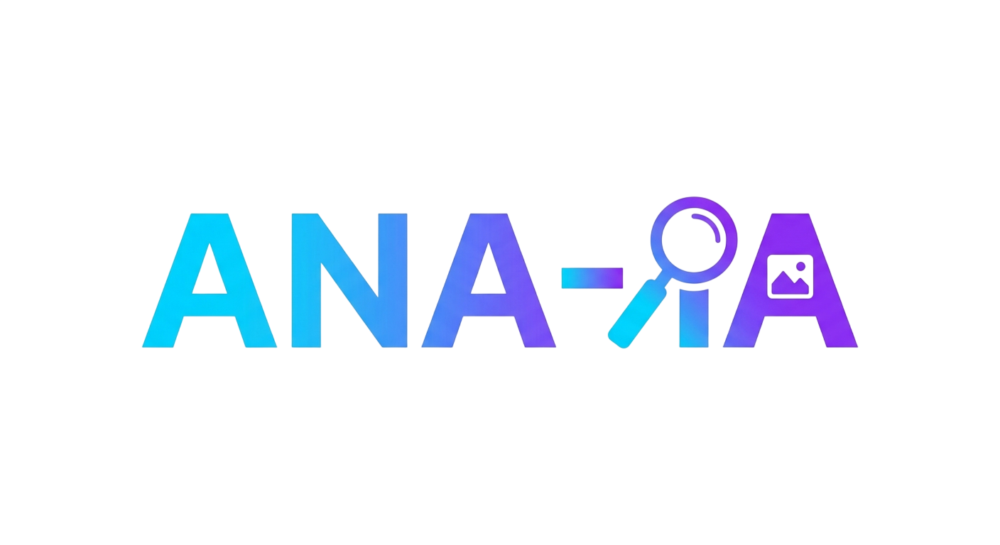

Arrastra una imagen aquí o haz clic para seleccionar
Soporta JPG, PNG, GIF, WebP
Este prompt describe el estilo visual de tu imagen. Pégalo en cualquier IA generativa para aplicar el mismo look a una nueva imagen.